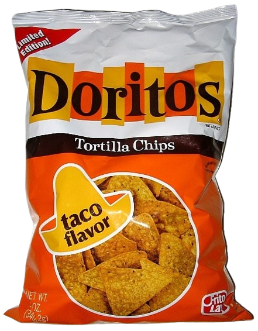

meia doritos 10$
doritos 2,50$
doritos enlatado 3,50$
Doritos (literalmente, a partir de espanhol mexicano Doradito ou Doritos) é um salgadinho/Xilito/Chilito (do inglês "Chips") de tortilla que foi lançado em 1964 no mercado norte-americano pela Alex Foods, somente na costa oeste, com formato triangular e crocante, no sabor original de milho torrado. No ano seguinte a marca foi comprada pela Frito-Lay, passando a ter uma distribuição mais abrangente. O salgadinho foi desenvolvido por Arch West.
Nessa época o produto era posicionado como aperitivo para latinos, sendo direcionado mais para esse público. Um novo sabor foi adicionado ao produto em 1969 com o lançamento do sabor taco. No ano de 1972 o produto começou a ser distribuído nacionalmente. Foi nessa época que ocorreu o lançamento do sabor mais popular do produto, o queijo nacho, que foi relançado em 1992 com o nome de Nacho Cheesier.
No ano de 1973, o ator Avery Schreiber estrelou um comercial que enfatizava o alto barulho de Doritos ao ser mastigado. Em 1982 foi lançado o Doritos Crispy Light. Dois anos depois a marca era a preferida entre os adolescentes norte-americanos e começava sua expansão internacional com seu lançamento na Austrália. Em 1986, o comediante Jay Leno estrelou um comercial de televisão. Ainda nesse mesmo ano a marca ganhou um novo sabor, o Cool Ranch. No ano de 1989, a versão Light foi reintroduzida no mercado com o nome Doritos Light Tortilla Chips. Em 1992 uma campanha intitulada “George Foreman and Sons”, em conjunto com funcionários voluntários da Fritolay, conduziram a maior amostra grátis de um produto no mundo. Ela aconteceu em 2 de maio em mais de onze mil pontos de vendas nos Estados Unidos e foi nomeado de "D-Day", fazendo parte do relançamento do novo Doritos Nacho Cheesier. Ainda nesse mesmo ano foram lançados no mercado, como teste experimental nas cidades de Tulsa e Omaha, os novos sabores Doritos Thins Salted e Salsa N’Cheese. Em 1993, esses novos sabores foram introduzidos nacionalmente com o comediante Chevy Chase estrelando a campanha televisiva. No ano de 1994 foi lançado o Doritos Cooler Ranch. Uma das campanhas publicitárias mais famosas foi lançada em 1996. No ano seguinte foi introduzida a campanha comercial criada pela agência BBDO. Em 1998 foi lançada a versão sem gordura e o Doritos 3D.
No Brasil o Doritos estreou em 1986 juntamente com a batata Ruffles. Atualmente existem no mercado brasileiro os sabores Queijo Nacho, Sweet Chili (apimentado), Doritos Dippas (Milho Branco), Cool Ranch (Salsa e Cebola), Doritos Rainbow (versão especial com vários sabores, entre eles pimenta preta), além do Doritos Wasabi. Em 2010 é lançado a linha De Montão, uma mistura dos salgadinhos Ruffles, Doritos e Baconzitos.